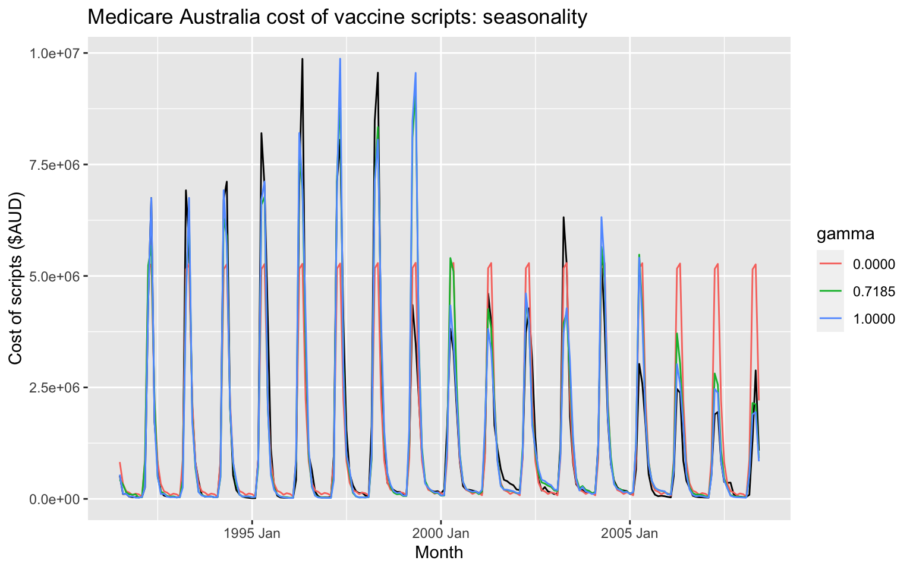

Chapter 3 Exponential Smoothing
3.1 Introduction
3.1.1 Historical perspective
- Developed in the 1950s and 1960s as methods (algorithms) to produce point forecasts.
- Combine a “level”, “trend” (slope) and “seasonal” component to describe a time series.
- The rate of change of the components are controlled by “smoothing parameters”: \(\alpha\), \(\beta\) and \(\gamma\) respectively.
- Need to choose best values for the smoothing parameters (and initial states).
- Equivalent ETS state space models developed in the 1990s and 2000s.
3.1.2 Big idea: control the rate of change
\(\alpha\) controls the flexibility of the level
- If \(\alpha = 0\), the level never updates (mean)
- If \(\alpha = 1\), the level updates completely (naive)
\(\beta\) controls the flexibility of the trend
- If \(\beta = 0\), the trend is linear (regression trend)
- If \(\beta = 1\), the trend updates every observation
\(\gamma\) controls the flexibility of the seasonality
- If \(\gamma = 0\), the seasonality is fixed (seasonal means)
- If \(\gamma = 1\), the seasonality updates completely (seasonal naive)
3.1.3 A model for levels, trends, and seasonalities
We want a model that captures the level (\(\ell_t\)), trend (\(b_t\)) and seasonality (\(s_t\)).
How do we combine these elements?
- Additively?
\[y_t = \ell_{t-1} + b_{t-1} + s_{t-m} + \varepsilon_t\]
- Multiplicatively?
\[y_t = \ell_{t-1}b_{t-1}s_{t-m}(1 + \varepsilon_t)\]
- Perhaps a mix of both?
\[y_t = (\ell_{t-1} + b_{t-1}) s_{t-m} + \varepsilon_t\]
How do the level, trend and seasonal components evolve over time?
General notation:
\[\text{ETS: } \textbf{E}\text{xponen}\textbf{T}\text{ial}\textbf{ S}\text{moothing}\]
Error: Additive ("A") or multiplicative ("M")
Trend: None ("N"), additive ("A"), multiplicative ("M"), or damped ("Ad" or "Md").
Seasonality: None ("N"), additive ("A") or multiplicative ("M")
3.2 Simple exponential smoothing
Time series \(y_1,y_2,\dots,y_T\).
Random walk forecasts \[\hat{y}_{T+h|T} = y_T\]
Average forecasts
\[\hat{y}_{T+h|T} = \frac1T\sum_{t=1}^T y_t\]
- Want something in between these methods.
- Most recent data should have more weight.
Forecast equation
\[\hat{y}_{T+1|T} = \alpha y_T + \alpha(1-\alpha) y_{T-1} + \alpha(1-\alpha)^2 y_{T-2}+ \cdots\]
where \(0 \le \alpha \le1\)
Component form
Forecast equation \(\hat{y}_{t+h|t} = \ell_{t}\)
Smoothing equation \(\ell_{t} = \alpha y_{t} + (1 - \alpha)\ell_{t-1}\)
- \(\ell_t\) is the level (or the smoothed value) of the series at time t.
\(\hat{y}_{t+1|t} = \alpha y_t + (1-\alpha) \hat{y}_{t|t-1}\) Iterate to get exponentially weighted moving average form.
Weighted average form
\[\hat{y}_{T+1|T}=\sum_{j=0}^{T-1} \alpha(1-\alpha)^j y_{T-j}+(1-\alpha)^T \ell_{0}\]
3.2.1 Optimising smoothing parameters
- Need to choose best values for \(\alpha\) and \(\ell_0\).
- Similarly to regression, choose optimal parameters by minimising SSE:
\[\text{SSE}=\sum_{t=1}^T(y_t-\hat{y}_{t|t-1})^2.\]
Unlike regression there is no closed form solution — use numerical optimization.
- For Algerian Exports example:
- \(\hat\alpha = 0.8400\)
- \(\hat\ell_0 = 39.54\)
3.2.2 Models and methods
3.2.2.1 Methods
- Algorithms that return point forecasts.
3.2.2.2 Models
- Generate same point forecasts but can also generate forecast distributions.
- A stochastic (or random) data generating process that can generate an entire forecast distribution.
- Allow for “proper” model selection.
3.2.3 ETS(A,N,N): A model for SES
Component form
Forecast equation: \(\hat{y}_{t+h|t} = \ell_{t}\)
Smoothing equation: \(\ell_{t} = \alpha y_{t} + (1 - \alpha)\ell_{t-1}\)
Forecast error: \(e_t = y_t - \hat{y}_{t|t-1} = y_t - \ell_{t-1}\)
Error correction form
\[y_t = \ell_{t-1} + e_t\] \[\ell_{t}= \ell_{t-1}+\alpha( y_{t}-\ell_{t-1})\]
\(\ell_{t}=\ell_{t-1}+\alpha e_{t}\)
Specify probability distribution for \(e_t\), we assume \(e_t = \varepsilon_t\sim\text{NID}(0,\sigma^2)\).
3.2.4 ETS(A,N,N)
Measurement equation: \(y_t = \ell_{t-1} + \varepsilon_t\)
State equation: \(\ell_t=\ell_{t-1}+\alpha \varepsilon_t\)
where \(\varepsilon_t\sim\text{NID}(0,\sigma^2)\).
- “innovations” or “single source of error” because equations have the same error process, \(\varepsilon_t\).
- Measurement equation: relationship between observations and states.
- State equation(s): evolution of the state(s) through time.
3.2.5 ETS(M,N,N)
SES with multiplicative errors.
- Specify relative errors \(\varepsilon_t=\frac{y_t-\hat{y}_{t|t-1}}{\hat{y}_{t|t-1}}\sim \text{NID}(0,\sigma^2)\)
- Substituting \(\hat{y}_{t|t-1}=\ell_{t-1}\) gives:
- \(y_t = \ell_{t-1}+\ell_{t-1}\varepsilon_t\)
- \(e_t = y_t - \hat{y}_{t|t-1} = \ell_{t-1}\varepsilon_t\)
- Substituting \(\hat{y}_{t|t-1}=\ell_{t-1}\) gives:
- Measurement equation: \(y_t = \ell_{t-1}(1 + \varepsilon_t)\)
State equation: \(\ell_t=\ell_{t-1}(1+\alpha \varepsilon_t)\)
Models with additive and multiplicative errors with the same parameters generate the same point forecasts but different prediction intervals.
3.2.6 ETS(A,N,N): Specifying the model
By default, an optimal value for \(\alpha\) and \(\ell_0\) is used.
\(\alpha\) can be chosen manually in trend().
3.2.7 Example: Algerian Exports
algeria_economy <- global_economy %>%
filter(Country == "Algeria")
fit <- algeria_economy %>%
model(ANN = ETS(Exports ~ error("A") + trend("N") + season("N")))
report(fit)## Series: Exports
## Model: ETS(A,N,N)
## Smoothing parameters:
## alpha = 0.84
##
## Initial states:
## l
## 39.54
##
## sigma^2: 35.63
##
## AIC AICc BIC
## 446.7 447.2 452.9## # A dable: 59 x 7 [1Y]
## # Key: Country, .model [1]
## # ETS(A,N,N) Decomposition: Exports = lag(level, 1) +
## # remainder
## Country .model Year Exports level remainder .fitted
## <fct> <chr> <dbl> <dbl> <dbl> <dbl> <dbl>
## 1 Algeria ANN 1959 NA 39.5 NA NA
## 2 Algeria ANN 1960 39.0 39.1 -0.496 39.5
## 3 Algeria ANN 1961 46.2 45.1 7.12 39.1
## 4 Algeria ANN 1962 19.8 23.8 -25.3 45.1
## 5 Algeria ANN 1963 24.7 24.6 0.841 23.8
## 6 Algeria ANN 1964 25.1 25.0 0.534 24.6
## 7 Algeria ANN 1965 22.6 23.0 -2.39 25.0
## 8 Algeria ANN 1966 26.0 25.5 3.00 23.0
## 9 Algeria ANN 1967 23.4 23.8 -2.07 25.5
## 10 Algeria ANN 1968 23.1 23.2 -0.630 23.8
## # … with 49 more rows
3.3 Models with trend
3.3.1 Holt’s linear trend
Component form
- Forecast \(\hat{y}_{t+h|t} = \ell_{t} + hb_{t}\)
- Level \(\ell_{t} = \alpha y_{t} + (1 - \alpha)(\ell_{t-1} + b_{t-1})\)
Trend \(b_{t} = \beta^*(\ell_{t} - \ell_{t-1}) + (1 -\beta^*)b_{t-1}\)
- Two smoothing parameters \(\alpha\) and \(\beta^*\) (\(0\le\alpha,\beta^*\le1\)).
- \(\ell_t\) level: weighted average between \(y_t\) and one-step ahead forecast for time \(t\), \((\ell_{t-1} + b_{t-1}=\hat{y}_{t|t-1})\)
- \(b_t\) slope: weighted average of \((\ell_{t} - \ell_{t-1})\) and \(b_{t-1}\), current and previous estimate of slope.
- Choose \(\alpha, \beta^*, \ell_0, b_0\) to minimise SSE.
3.3.2 ETS(A,A,N)
Holt’s linear method with additive errors.
- Assume \(\varepsilon_t=y_t-\ell_{t-1}-b_{t-1} \sim\text{NID}(0,\sigma^2)\).
Substituting into the error correction equations for Holt’s linear method
\[y_t=\ell_{t-1}+b_{t-1}+\varepsilon_t\] \[\ell_t=\ell_{t-1}+b_{t-1}+\alpha \varepsilon_t\] \[b_t=b_{t-1}+\alpha\beta^* \varepsilon_t\]For simplicity, set \(\beta=\alpha \beta^*\).
3.3.3 Exponential smoothing: trend/slope
3.3.4 ETS(M,A,N)
Holt’s linear method with multiplicative errors.
- Assume \(\varepsilon_t=\frac{y_t-(\ell_{t-1}+b_{t-1})}{(\ell_{t-1}+b_{t-1})}\)
Following a similar approach as above, the innovations state space model underlying Holt’s linear method with multiplicative errors is specified as
\[y_t=(\ell_{t-1}+b_{t-1})(1+\varepsilon_t)\] \[\ell_t=(\ell_{t-1}+b_{t-1})(1+\alpha \varepsilon_t)\] \[b_t=b_{t-1}+\beta(\ell_{t-1}+b_{t-1}) \varepsilon_t\]
where again \(\beta=\alpha \beta^*\) and \(\varepsilon_t \sim \text{NID}(0,\sigma^2)\).
3.3.5 ETS(A,A,N): Specifying the model
By default, optimal values for \(\beta\) and \(b_0\) are used.
\(\beta\) can be chosen manually in trend().
3.3.6 Example: Australian population
aus_economy <- global_economy %>% filter(Code == "AUS") %>%
mutate(Pop = Population/1e6)
fit <- aus_economy %>%
model(AAN = ETS(Pop ~ error("A") + trend("A") + season("N")))
report(fit)## Series: Pop
## Model: ETS(A,A,N)
## Smoothing parameters:
## alpha = 0.9999
## beta = 0.3266
##
## Initial states:
## l b
## 10.05 0.2225
##
## sigma^2: 0.0041
##
## AIC AICc BIC
## -76.99 -75.83 -66.68## # A dable: 59 x 8 [1Y]
## # Key: Country, .model [1]
## # ETS(A,A,N) Decomposition: Pop = lag(level, 1) +
## # lag(slope, 1) + remainder
## Country .model Year Pop level slope remainder .fitted
## <fct> <chr> <dbl> <dbl> <dbl> <dbl> <dbl> <dbl>
## 1 Austral… AAN 1959 NA 10.1 0.222 NA NA
## 2 Austral… AAN 1960 10.3 10.3 0.222 -0.000145 10.3
## 3 Austral… AAN 1961 10.5 10.5 0.217 -0.0159 10.5
## 4 Austral… AAN 1962 10.7 10.7 0.231 0.0418 10.7
## 5 Austral… AAN 1963 11.0 11.0 0.223 -0.0229 11.0
## 6 Austral… AAN 1964 11.2 11.2 0.221 -0.00641 11.2
## 7 Austral… AAN 1965 11.4 11.4 0.221 -0.000314 11.4
## 8 Austral… AAN 1966 11.7 11.7 0.235 0.0418 11.6
## 9 Austral… AAN 1967 11.8 11.8 0.206 -0.0869 11.9
## 10 Austral… AAN 1968 12.0 12.0 0.208 0.00350 12.0
## # … with 49 more rows3.3.7 Damped trend method
Component form
\[\hat{y}_{t+h|t} = \ell_{t} + (\phi+\phi^2 + \dots + \phi^{h})b_{t}\] \[\ell_{t} = \alpha y_{t} + (1 - \alpha)(\ell_{t-1} + \phi b_{t-1})\] \[b_{t} = \beta^*(\ell_{t} - \ell_{t-1}) + (1 -\beta^*)\phi b_{t-1}.\]
- Damping parameter \(0<\phi<1\).
- If \(\phi=1\), identical to Holt’s linear trend.
- As \(h\rightarrow\infty\), \(\hat{y}_{T+h|T}\rightarrow \ell_T+\phi b_T/(1-\phi)\).
- Short-run forecasts trended, long-run forecasts constant.
3.3.8 Example: Australian population
- Write down the model for ETS(A,\(A_d\),N)
aus_economy %>%
model(holt = ETS(Pop ~ error("A") + trend("Ad") + season("N"))) %>%
forecast(h = 20) %>%
autoplot(aus_economy)
fit <- aus_economy %>%
filter(Year <= 2010) %>%
model(
ses = ETS(Pop ~ error("A") + trend("N") + season("N")),
holt = ETS(Pop ~ error("A") + trend("A") + season("N")),
damped = ETS(Pop ~ error("A") + trend("Ad") + season("N"))
)| term | SES | Linear trend | Damped trend |
|---|---|---|---|
| alpha | 1.00 | 1.00 | 1.00 |
| beta^* | 0.30 | 0.40 | |
| phi | 0.98 | ||
| l_0 | 10.28 | 10.05 | 10.04 |
| b_0 | 0.22 | 0.25 | |
| Training RMSE | 0.24 | 0.06 | 0.07 |
| Test RMSE | 1.63 | 0.15 | 0.21 |
| Test MASE | 6.18 | 0.55 | 0.75 |
| Test MAPE | 6.09 | 0.55 | 0.74 |
| Test MAE | 1.45 | 0.13 | 0.18 |
3.4 Models with seasonality
3.4.1 Holt-Winters additive method
Holt and Winters extended Holt’s method to capture seasonality.
Component form
\[\hat{y}_{t+h|t} = \ell_{t} + hb _{t} + s_{t+h-m(k+1)}\] \[\ell_{t} = \alpha(y_{t} - s_{t-m}) + (1 - \alpha)(\ell_{t-1} + b_{t-1})\] \[b_{t} = \beta^*(\ell_{t} - \ell_{t-1}) + (1 - \beta^*)b_{t-1}\] \[s_{t} = \gamma (y_{t}-\ell_{t-1}-b_{t-1}) + (1-\gamma)s_{t-m}\]
- \(k=\) integer part of \((h-1)/m\). Ensures estimates from the final year are used for forecasting.
- Parameters: \(0\le \alpha\le 1\), \(0\le \beta^*\le 1\), \(0\le \gamma\le 1-\alpha\) and \(m=\) period of seasonality (e.g. \(m=4\) for quarterly data).
Seasonal component is usually expressed as
\[s_{t} = \gamma^* (y_{t}-\ell_{t})+ (1-\gamma^*)s_{t-m}.\]Substitute in for \(\ell_t\):
\[s_{t} = \gamma^*(1-\alpha) (y_{t}-\ell_{t-1}-b_{t-1})+ [1-\gamma^*(1-\alpha)]s_{t-m}\]- We set \(\gamma=\gamma^*(1-\alpha)\).
The usual parameter restriction is \(0\le\gamma^*\le1\), which translates to \(0\le\gamma\le(1-\alpha)\).

3.4.2 ETS(A,A,A)
Holt-Winters additive method with additive errors.
- Forecast equation} \(\hat{y}_{t+h|t} = \ell_{t} + hb_{t} + s_{t+h-m(k+1)}\)
- Observation equation} \(y_t=\ell_{t-1}+b_{t-1}+s_{t-m} + \varepsilon_t\)
State equations} \[\ell_t=\ell_{t-1}+b_{t-1}+\alpha \varepsilon_t\] \[b_t=b_{t-1}+\beta \varepsilon_t\] \[s_t = s_{t-m} + \gamma\varepsilon_t\]
- Forecast errors: \(\varepsilon_{t} = y_t - \hat{y}_{t|t-1}\)
\(k\) is integer part of \((h-1)/m\)
Activity
- Write down the model for ETS(A,N,A)
3.4.3 Holt-Winters multiplicative method
For when seasonal variations are changing proportional to the level of the series.
Component form
\[\hat{y}{t+h}{t} = (\ell_{t} + hb_{t})s_{t+h-m(k+1)}\] \[\ell_{t} = \alpha \frac{y_{t}}{s_{t-m}} + (1 - \alpha)(\ell_{t-1} + b_{t-1})\] b_{t} &= \[\beta^*(\ell_{t}-\ell_{t-1}) + (1 - \beta^*)b_{t-1}\] \[s_{t} = \gamma \frac{y_{t}}{(\ell_{t-1} + b_{t-1})} + (1 - \gamma)s_{t-m}\]
- \(k\) is integer part of \((h-1)/m\).
- With additive method \(s_t\) is in absolute terms:within each year \(\sum_i s_i \approx 0\).
- With multiplicative method \(s_t\) is in relative terms:within each year \(\sum_i s_i \approx m\).
3.4.4 ETS(M,A,M)
Holt-Winters multiplicative method with multiplicative errors.
- Forecast equation \(\hat{y}_{t+h|t} = (\ell_{t} + hb_{t}) s_{t+h-m(k+1)}\)
- Observation equation \(y_t= (\ell_{t-1}+b_{t-1})s_{t-m}(1 + \varepsilon_t)\)
State equations \[\ell_t=(\ell_{t-1}+b_{t-1})(1+\alpha \varepsilon_t)\] \[b_t=b_{t-1} +\beta(\ell_{t-1}+b_{t-1}) \varepsilon_t\] \[s_t = s_{t-m}(1 + \gamma\varepsilon_t)\]
- Forecast errors: \(\varepsilon_{t} = (y_t - \hat{y}_{t|t-1})/\hat{y}_{t|t-1}\)
\(k\) is integer part of \((h-1)/m\).
3.4.5 Example: Australian holiday tourism
aus_holidays <- tourism %>%
filter(Purpose == "Holiday") %>%
summarise(Trips = sum(Trips))
fit <- aus_holidays %>%
model(
additive = ETS(Trips ~ error("A") + trend("A") + season("A")),
multiplicative = ETS(Trips ~ error("M") + trend("A") + season("M"))
)
fc <- fit %>% forecast()Estimated components
## # A dable: 168 x 7 [1Q]
## # Key: .model [2]
## # ETS(A,A,A) & ETS(M,A,M) Decomposition: Trips = lag(level,
## # 1) + lag(slope, 1) + lag(season, 4) + remainder
## .model Quarter Trips level slope season remainder
## <chr> <qtr> <dbl> <dbl> <dbl> <dbl> <dbl>
## 1 additive 1997 Q1 NA NA NA 1512. NA
## 2 additive 1997 Q2 NA NA NA -290. NA
## 3 additive 1997 Q3 NA NA NA -684. NA
## 4 additive 1997 Q4 NA 9899. -37.4 -538. NA
## 5 additive 1998 Q1 11806. 9964. -24.5 1512. 433.
## 6 additive 1998 Q2 9276. 9851. -35.6 -290. -374.
## 7 additive 1998 Q3 8642. 9700. -50.2 -684. -489.
## 8 additive 1998 Q4 9300. 9694. -44.6 -538. 188.
## 9 additive 1999 Q1 11172. 9652. -44.3 1512. 10.7
## 10 additive 1999 Q2 9608. 9676. -35.6 -290. 290.
## # … with 158 more rows3.4.6 Holt-Winters damped method
Often the single most accurate forecasting method for seasonal data:
\[\hat{y}_{t+h|t} = [\ell_{t} + (\phi+\phi^2 + \dots + \phi^{h})b_{t}]s_{t+h-m(k+1)}\] \[\ell_{t} = \alpha(y_{t} / s_{t-m}) + (1 - \alpha)(\ell_{t-1} + \phi b_{t-1})\] \[b_{t} = \beta^*(\ell_{t} - \ell_{t-1}) + (1 - \beta^*)\phi b_{t-1}\] \[s_{t} = \gamma \frac{y_{t}}{(\ell_{t-1} + \phi b_{t-1})} + (1 - \gamma)s_{t-m}\]
3.5 Innovations state space models
3.5.1 Exponential smoothing methods
- \((N,N)\): Simple exponential smoothing
- \((A,N)\): Holt’s linear method
- \((A_d,N)\): Additive damped trend method
- \((A,A)\): Additive Holt-Winters’ method
- \((A,M)\): Multiplicative Holt-Winters’ method
- \((A_d,M)\): Damped multiplicative Holt-Winters’ method
There are also multiplicative trend methods (not recommended).
3.5.2 ETS models
Additive Error
Multiplicative Error